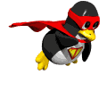
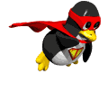

Raccourcis d'édition :
- Alt+F4 Fermer la fenêtre actuelle ★
- Alt+Tab Changer de fenêtre rapidement ★
- Ctrl+Alt+Flèches Basculer entre les bureaux ★
- Ctrl+Alt+L Verrouiller l'écran ★
 

Linux Shortcuts:
Se déplacer sur le bureau :
- Alt+F4 Fermer la fenêtre actuelle ★
- Alt+Tab Changer de fenêtre rapidement ★
- Ctrl+Alt+Flèches Basculer entre les bureaux ★
- Ctrl+Alt+L Verrouiller l'écran ★
Raccourcis d'édition :
- Ctrl+a Sélectionner tout le texte ★
- Ctrl+x Couper ★
- Ctrl+c Copier ★
- Ctrl+v Coller★
- Ctrl+z Annuler la dernière action ★
Capture d'écran :
- Impr.Ecran Fait une capture d'écran ★
mon tweeter
>>>>>>> gh-pages